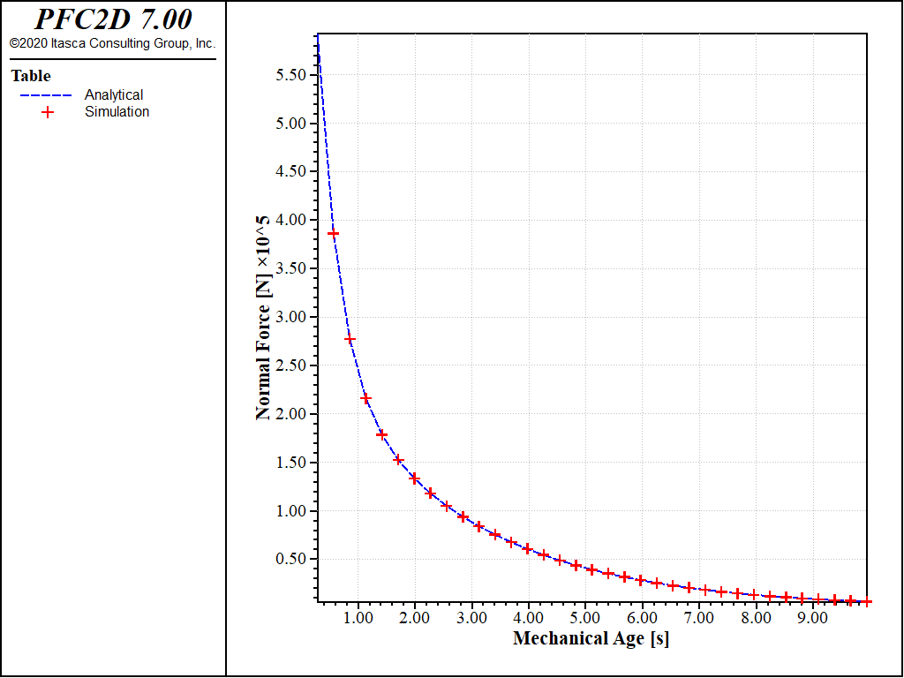
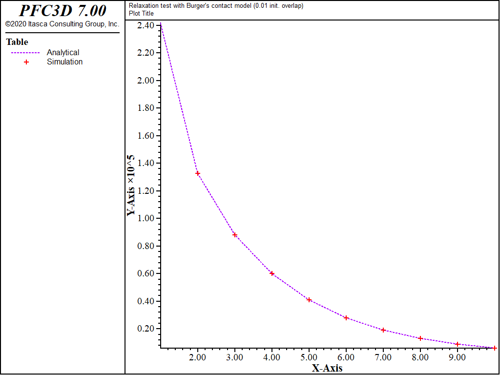

Burger 接触模型：应力松弛
问题描述
注意
本算例的项目文件可在 PFC 中查看或运行。[1]所用的数据文件（data files）列于本算例末尾。
通过一个简单系统对 Burger 模型（Burger’s Model） 进行验证，该系统由两个球颗粒组成，两球以非零的初始重叠量固定。将法向力随时间的衰减与预期的解析解进行对比。
解析解
考虑应力松弛条件（即接触力对单位位移的响应）。为方便起见，下面重新给出 式（5）（eq. (5)）（见 Burger 模型说明（Burger’s model description））：
其中：
其中符号 \(\pm\) 和 \(\mp\) 分别对应法向和剪切方向的情形（例如，\(\pm\) 表示法向方向下的 \(+\) 以及剪切方向下的 \(-\)）。
在 \(\dot{u} = u = 0\)、\(\dot{f} = f = 0\) 的初始条件下，(1) 的 Laplace 变换由 (3) 给出。
其中 \(U(s) = \mathcal{L}[u(t)]\) 和 \(F(s) = \mathcal{L}[f(t)]\)。
系统的传递函数由下式给出：
对于单位输入 \(u(t)= 1\)，即 \(U(s) = 1/s\)，其响应由下式给出：
其表达式为：
其中 \(z_1\) 和 \(z_2\) 是二次方程 \(a_2 s^2 + a_1 s + 1 = 0\) 的根，并且
因此，输入单位位移 \(u(t)=1\) 时的时域解析解由下式给出：
PFC 模型
使用下面给出的数据文件，在 PFC2D 和 PFC3D 中进行数值模拟。两个系统完全相同；二者均由两个球颗粒组成，球颗粒半径均为 0.05，密度为 2600 kg/m3，初始重叠量（即阶跃输入）为 \(u(t=0) = 0.01\)。唯一的差别在于颗粒形状：三维中为球体，二维中为单位厚度的圆盘，这体现在两个系统的质量和时步不同。
图 1 和 2 给出了 PFC 计算得到的法向力随时间的衰减，并与解析解进行了对比。在两个模型中，数值解均表明接触力随时间呈指数衰减，这与图中蓝色虚线所示的解析解一致。


图 1：Burger 模型的法向接触力时程。模拟结果以红色标记表示，解析解以蓝色虚线表示（二维模型）。


图 2：Burger 模型的法向接触力时程。模拟结果以红色标记表示，解析解以蓝色虚线表示（三维模型）。
数据文件
burger.dat（二维）
;=========================================================================
; 文件名：burger.dat（2D）
;
; 采用 Burger 接触模型的松弛试验（初始重叠量为 0.01）
;=========================================================================
model new
model large-strain on
;---------------------------
[k_set = 1.0e8]
[c_set = 1.0e8]
[f_set = 0.0 ]
[rad = 0.05 ]
[un = 0.01 ]
;---------------------------
fish define cal_cf
global cpnt, age0
cal_cf = comp.x(contact.prop(cpnt,'bur_force'))
cal_age = mech.time.total - age0
end
;---------------------------
fish define compare_func
local numPnt = table.size(1)
global errmax = 0.0
local a1 = c_set/k_set + c_set * (1.0/k_set + 1.0/k_set)
local a2 = c_set*c_set/(k_set*k_set)
local b1 = c_set
local b2 = c_set*c_set/k_set
local z1 = (-a1+math.sqrt(a1*a1-4.0*a2))/(2.0*a2)
local z2 = (-a1-math.sqrt(a1*a1-4.0*a2))/(2.0*a2)
local aa1 = (b2*z1+b1)/a2/(z1-z2)
local aa2 = (b2*z2+b1)/a2/(z2-z1)
loop n (1,numPnt)
local tt = table.x(1,n)
table.x(2,n) = table.x(1,n)
table.y(2,n) = un*(aa1*math.exp(z1*tt)+aa2*math.exp(z2*tt))
errmax = math.max(errmax,math.abs(table.y(1,n)-table.y(2,n))/table.y(2,n))
endLoop
io.out(string.build(' Max. error = %1 %',string(errmax*100)))
end
;=====================================
contact cmat default model burger property ...
'bur_knk' [k_set] 'bur_cnk' [c_set] ...
'bur_knm' [k_set] 'bur_cnm' [c_set] ...
'bur_ksk' [k_set] 'bur_csk' [c_set] ...
'bur_ksm' [k_set] 'bur_csm' [c_set] ...
'bur_fric' [f_set]
; --- 创建两个球，指定参数与边界条件。
model domain extent -1 1
ball create id 1 rad [rad] position-y 0.0
ball create id 2 rad [rad] position-y [2.0*rad-un]
ball attribute density 2600.0
ball fix velocity-x velocity-y spin
model clean
[cpnt = contact.find('ball-ball',1)]
;
fish history name '1' cal_cf
fish history name '2' cal_age
history interval = 1000
[age0 = mech.time.total]
model mechanical timestep fix 2.840299219037086e-04
model solve time 10.0
history export '1' vs '2' table '1'
[compare_func]
model save 'system-final'
program return
;=========================================================================
; 文件结束：burger.dat（2D）
burger.dat（三维）
;=========================================================================
; 文件名：burger.p3dat
;
; 采用 Burger 接触模型的松弛试验（初始重叠量 0.01）
;=========================================================================
model new
model large-strain on
model title 'Relaxation test with Burger\'s contact model (0.01 init. overlap)'
;---------------------------
[k_set = 1.0e8]
[c_set = 1.0e8]
[f_set = 0.0 ]
[rad = 0.05 ]
[un = 0.01 ]
;---------------------------
fish define cal_cf
global cpnt, age0
cal_cf = comp.x(contact.prop(cpnt,'bur_force'))
cal_age = mech.time.total - age0
end
;---------------------------
fish define compare_func
local numPnt = table.size(1)
global errmax = 0.0
local a1 = c_set/k_set + c_set * (1.0/k_set + 1.0/k_set)
local a2 = c_set*c_set/(k_set*k_set)
local b1 = c_set
local b2 = c_set*c_set/k_set
local z1 = (-a1+math.sqrt(a1*a1-4.0*a2))/(2.0*a2)
local z2 = (-a1-math.sqrt(a1*a1-4.0*a2))/(2.0*a2)
local aa1 = (b2*z1+b1)/a2/(z1-z2)
local aa2 = (b2*z2+b1)/a2/(z2-z1)
loop n (1,numPnt)
local tt = table.x(1,n)
table.x(2,n) = table.x(1,n)
table.y(2,n) = un*(aa1*math.exp(z1*tt)+aa2*math.exp(z2*tt))
errmax = math.max(errmax,math.abs(table.y(1,n)-table.y(2,n))/table.y(2,n))
endLoop
io.out(string.build(' Max. error = %1 %',string(errmax*100)))
end
;=====================================
contact cmat default model burger property ...
bur_knk [k_set] bur_cnk [c_set] ...
bur_knm [k_set] bur_cnm [c_set] ...
bur_ksk [k_set] bur_csk [c_set] ...
bur_ksm [k_set] bur_csm [c_set] ...
bur_fric [f_set]
; --- 创建两个球，指定参数与边界条件。
model domain extent -1 1
ball create id 1 rad [rad] position-z 0.0
ball create id 2 rad [rad] position-z [2.0*rad-un]
ball attribute density 2600.0
ball fix velocity-x velocity-y velocity-z spin
model clean
[cpnt = contact.find('ball-ball',1)
;
fish history cal_cf
fish history cal_age
history interval = 1000
model mechanical timestep fix 1e-3
[age0 = mech.time.total]
model solve time 10.0
history export '1' vs '2' table '1'
[compare_func]
model save 'system-final'
program return
;=========================================================================
; 文件结束：burger.p3dat
尾注
| [1] | 要在 PFC 中查看本项目，请使用程序菜单。
⮡ PFC |
| 这些内容对您有帮助吗？… | FLAC3D © 2019, Itasca | 原文更新于 2020 年 10 月 8 日 |